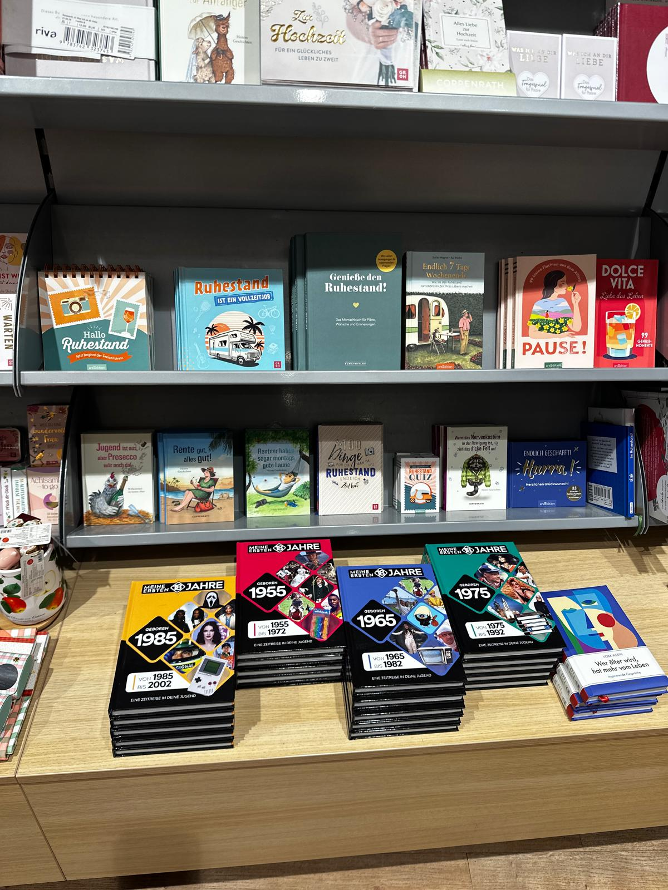

01 — 05
Vertrieb für Verlage.
Vom Marktzugang bis zur Auslieferung.
Wir übernehmen Vertriebsaufgaben für Verlage – vom Außendienst und Key Account Management über Vertriebsinnendienst und Marktbearbeitung bis zur Auslieferung.
Dabei kennen wir die Realität des Buchmarktes: Sortimente verändern sich, Verkaufsflächen werden knapper und nicht jede Warengruppe entwickelt sich gleich. Umso wichtiger sind Erfahrung, Marktkenntnis und ein Vertrieb, der genau hinschaut.
Vertrieb mit uns besprechen →Nicht jeder Titel braucht denselben Vertriebsansatz.
Deshalb betrachten wir Programme differenziert: nach Sortiment, Zielgruppe, Handelspartner und Marktumfeld. Aus dieser Perspektive entwickeln wir gemeinsam mit unseren Verlagspartnern passende Vertriebsansätze.
Im Markt präsent. Zentral und vor Ort.

Unser Außendienst stellt Novitäten und Backlist vor, führt Sortimentsgespräche und begleitet die Vertriebsarbeit im Handel.
Auf zentraler Ebene bringen wir Programme und Themen bei relevanten Ansprechpartnern ein und prüfen, wo sich Ansätze für weiterführende Gespräche ergeben.
Novitäten · Backlist · Sortimentsgespräche · Platzierungen · Aktionen
Zentrale Ansprache · Sortimentsvorstellung · Konditionen · Aktionsansätze · Austausch
Wir bündeln Rückmeldungen aus Handel und Vertrieb und bringen sie in die Zusammenarbeit mit unseren Verlagspartnern ein.
Marktfeedback gehört für uns zum Vertrieb.
Damit Vertrieb im Alltag funktioniert.
Unser Innendienst verbindet Verlag, Außendienst, Handel und Auslieferung und begleitet die operative Zusammenarbeit.
Vertrieb und Auslieferung sinnvoll verbinden.
Für Verlage, die neben dem Vertrieb auch ihre Auslieferung neu aufstellen möchten, bieten wir eine integrierte Lösung. Die operative Lager- und Logistikabwicklung erfolgt über Kolibri360, die Abstimmung mit dem Verlag über GeoCenter.
Manchmal liegt der passende Weg außerhalb des Gewohnten.
Je nach Programm prüfen wir ergänzende Absatzmöglichkeiten und entwickeln passende Ansätze gemeinsam mit unseren Verlagspartnern.
Welche Wege sinnvoll sind, besprechen wir lieber persönlich.